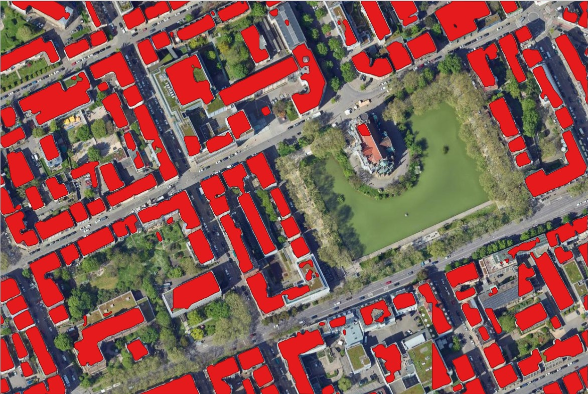
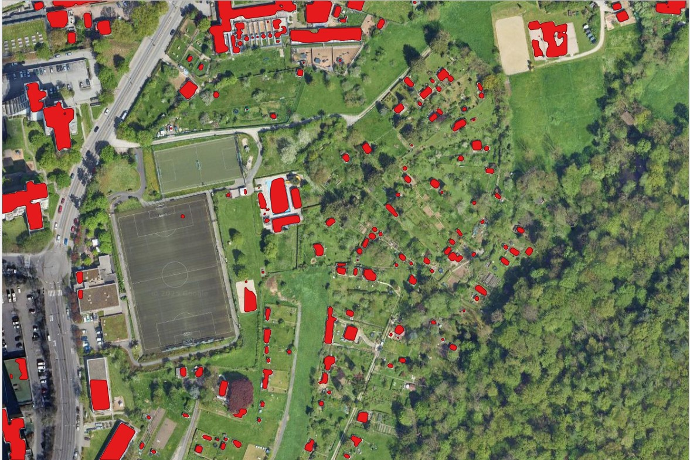
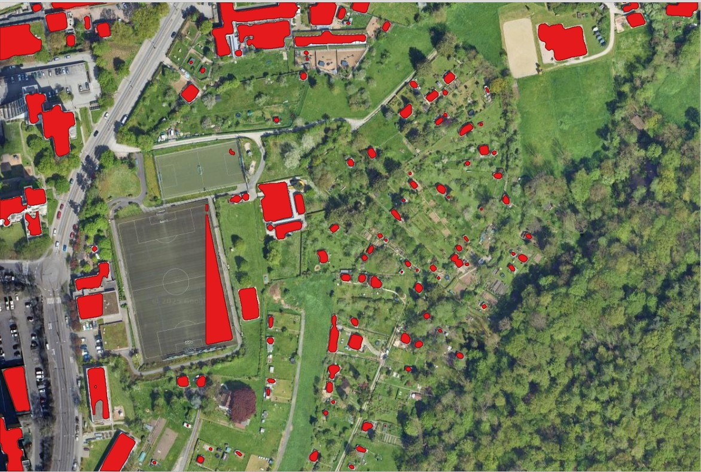

Buildings Segmentation with Deep Learning in QGIS utilizing Deepness Plugin
This project utilized the Deepness Plugin in QGIS to perform building segmentation using a pretrained model from the ramp Building Footprint, tested on Feuersee and Konradin-Kreutzer Weg at 40cm and 50cm resolutions.This post summarizes the workflow, key results, and insights gained.
Method
Using the Deepness Plugin in QGIS, I loaded the pretrained model and applied it to satellite imagery of Feuersee and Konradin-Kreutzer Weg. The model type was set to "Segmentor," with input channels mapped based on the image bands (4) and model channels (3). Processing was conducted at both 40cm and 50cm resolutions, using a consistent tile size of 256x256 pixels to evaluate performance across different scales..
Results
- Feuersee (Urban Area):
- 40cm Resolution: Background Area: 293,453.28 m² (79.18%), Building Area: 77,159.2 m² (20.82%)
- 50cm Resolution: Background Area: ~276,650.50 m² (78.50%), Building Area: ~92,118.50 m² (21.50%)
Pre-Segmentation Feuersee

Segmented Buildings at 40cm Resolution
Segmented Buildings at 50cm Resolution
The model effectively segmented the dense urban landscape. At 50cm, the detection of building footprints improved slightly, capturing more structures compared to 40cm, though some smaller or obscured buildings remained challenging. - Konradin-Kreutzer Weg (Rural Area):
- 40cm Resolution:
- Segment 1: Background Area: 351,259.36 m² (95.08%), Building Area: 18,588 m² (4.92%)
- 50cm Resolution:
- Segment 2: Background Area: ~344,749.50 m² (93.20%), Building Area: ~24,766.50 m² (6.80%)
- 40cm Resolution:

Pre-Segmentation Konradin-Kreutzer
Segmented Buildings at 40cm Resolution
Segmented Buildings at 50cm Resolution
Visualization
Feuersee 50cm Resolution - Before and After Swipe Effect
Konradin-Kreutzer Weg 50cm Resolution - Before and After Swipe Effect
Analysis
- The pretrained model performed robustly across varying densities and resolutions.
- The 50cm resolution aligned well with the dataset, offering a foundation for further development.
- The 40cm resolution provided detailed results but struggled slightly with dense urban areas.
Future work could involve fine-tuning the model with local data at 50cm resolution to enhance accuracy in urban settings.
Reflections & Insights
This project highlights the potential of deep learning for building footprint extraction using the Deepness Plugin in QGIS. The ramp dataset provided a solid base, and the 50cm resolution with 256x256 pixel tiles emerged as optimal, offering better headway for future refinements. Future work could involve fine-tuning the model with local data at this resolution to enhance accuracy in dense urban settings.